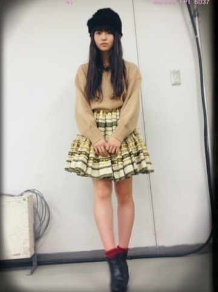

| 2013/12 16 Mon | ぎゅんとして悔しい 。526回目 |
幕張メッセで個別握手会！
ベレー帽の中に髪の毛詰め込んだ！
ロングプリーツスカート
ダサさの極み。
1部2部の格好です。
2部になってからはベレー帽なしで
眼鏡をかけました。

ノーブランドのレースネックレス
レッドペッパーそっくりの
ビーズがくっついてます。

3部からスカートチェンジ
実はこの帽子かぶってない...
写真撮り忘れました泣
このコーデに髪型は三つ編み。
このスカート
ボリュームがあって可愛いさ

ブラックとゴールドの
チロリアンテープがいっぱい。
スカートはどちらとも古着です。
着回ししたベージュのニットは
ローリーズファーム。
はじめましての方がたくさんで、
めちゃくちゃ嬉しかったっっ
着席しながらの握手会でした。
慣れるのに時間がかかるけど、
みなさんに楽しんでもらえるように
私も楽しもう！
みなさんいつもありがとう。
さゆ、とまとお誕生日おめでとう。
さゆは私から基本ダル絡みするのー
ふざけ合うの楽しい2人！
またカフェでまったりしようね。
2人とも癒されます。

とまとは紙で私はビニール
(後ろのホワイトボードに注目)
おやすみなさい
まりか
コメント(385)
2013/12/16 00:18